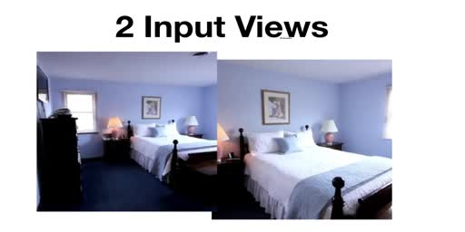

Frames, columns and definitions
Everything below is editable


| Method | PSNR | Time |
|---|---|---|
| Baseline | 31.0 | 12 h |
| Ours | 33.4 | 6 min |
- Scene representation
- What the network holds about the world.
- Neural rendering
- How that representation becomes pixels.
Frames, columns and definitions

| Method | PSNR | Time |
|---|---|---|
| Baseline | 31.0 | 12 h |
| Ours | 33.4 | 6 min |